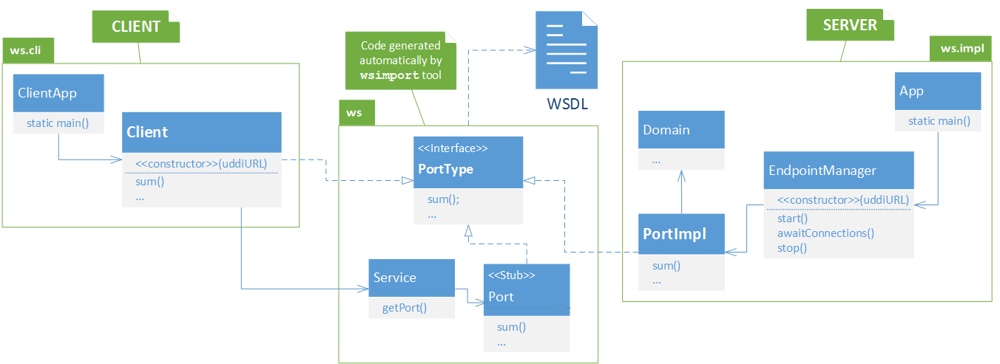

Exemplo servidor-cliente completo
Calculadora-
Web Service (contract-first)
 - solução do exercício proposto
- solução do exercício proposto
-
Web Service client
A solução inclui testes unitários (mvn test) e testes de integração (mvn verify).
A solução apresentada divide as responsabilidades do programa por diferentes objetos,
que são ilustrados por um Diagrama UML de Classes e Pacotes:

{kind=link}
As classes Java que representam o serviço são geradas pela ferramenta wsimport
a partir do contrato WSDL.
As operações descritas no WSDL são traduzidas na interface (PortType) gerada,
incluindo tipos de dados e exceções.
O servidor está estruturado nos seguintes objetos:
- Application - ponto de entrada no programa servidor. Recebe os argumentos de linha de comando e instancia o gestor da comunicação.
- EndpointManager - recebe argumentos no construtor e vai criar a extremidade (Endpoint) do Web Service, ou seja, o URL onde o servidor fica à espera de receber pedidos. Vai também ser responsável pela publicação do Web Service no UDDI.
- Port - implementação da interface (PortType) do Web Service. Define o que cada operação vai fazer. Em Web Services de maior dimensão, poderá usar um ou mais objetos de Domínio para implementar a lógica da aplicação.
O cliente está estruturado nos seguintes objetos:
- ClientApplication - ponto de entrada no programa cliente. Recebe os argumentos de linha de comando e instancia um cliente para invocações remotas.
- Client - implementação da interface (PortType) do Web Service, que enriquece o Stub gerado (o Port obtido a partir do Service) com a configuração do URL obtido por pesquisa do Web Service no UDDI.
Diagrama UML de classes e pacotes da Calculadora com dependências de bibliotecas.
{kind=link}